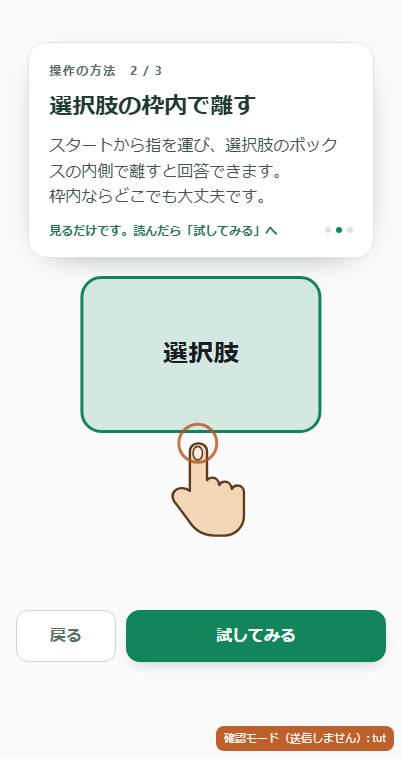
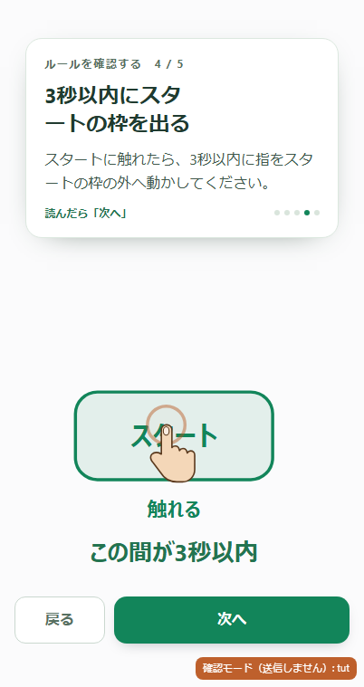
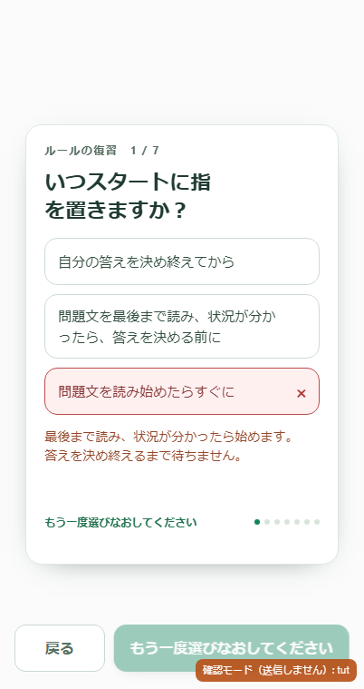
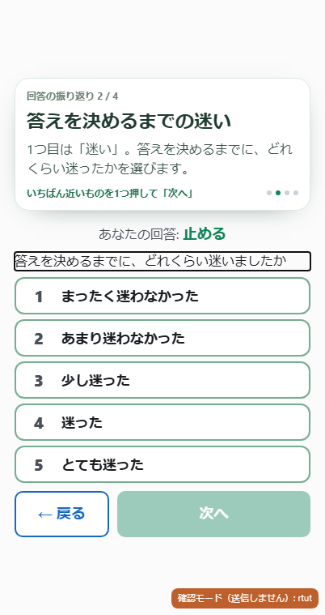
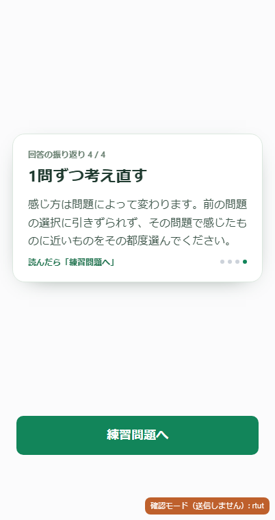
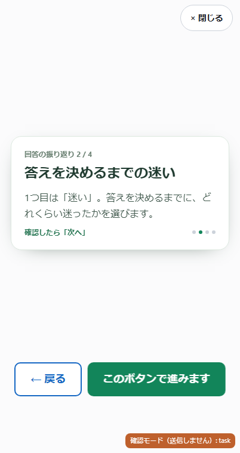

2026年10月16日の実機所見に対応した 2026-10-16-ui21。今回のご提案はすべて反映しました。
実装・自動検証・公開反映済み。公開URLの配布21ファイルが正本と一致。 公開照合記録
画像はChromeのタッチ端末エミュレーションです。本人のiPhone Safariでの操作感は未確認です。
公開URLからのブラウザ確認も35項目成功。接触円72px、実演の待機、復習の誤答と位置、振り返りの説明見直しを、送信を止めて確認しました。公開ブラウザの確認結果
| 箇所 | 変更 | 理由 |
|---|---|---|
| 枠内で離す実演 | 実際の選択肢からの拡大率を指にも適用。「見本を見る・選択肢の拡大図」の表示を削除。 | 指と枠の大きさの関係を保ち、説明の重複を減らします。 |
| 最背面の背景 | 課題・説明・振り返りを共通の薄い背景色に統一。 | 画面移動時の不要な色の変化を減らします。 |
| 3秒の実演 | 「この間が3秒以内」を図の下へ移動。スタート表示から触れるまで、毎回1秒待機。 | 接触前の状態と、計時される区間を見分けやすくします。 |
| 押下後の右矢印 | 実演・操作練習・本番とも「スタート」を維持。押下中は従来どおり色で表示。 | 右へ動かす指示と受け取られうる記号を避けます。 |
| ルールの復習の位置 | 7問の問題文・正誤解説に必要な空間を先に確保。解説表示と問題切替でカード上端と進行ボタンの位置を固定。 | 回答するたびに読む場所や押す場所が動く負担を減らします。極端に低い画面ではカード内でスクロールできます。 |
| 復習の誤答 | 未選択と誤答の案内を分離。誤答後は「もう一度選びなおしてください」。薄赤背景・赤枠・×を表示。 | 選択済みなのに未選択と案内される矛盾を解消。色だけに頼らず状態を示します。 |
| 振り返りの丸印と本文 | 全ページの丸印を右端へ。2・4ページを含め、本文はカードの内側いっぱいに折り返す表示へ。 | 配置をそろえ、不自然に短い行を減らします。 |
| 途中で開く振り返りの説明 | 操作できない回答と尺度の選択肢を非表示に。閉じたら元の回答・ページ・計測へ復帰。 | 読んで進む画面の中に、押せそうな部品を残さないためです。 |
| 説明中の別領域へのタッチ | 初回と再確認の両方で「このボタンで進みます」と表示し、進行ボタンを揺らす。 | 他の操作説明と同じ誘導にそろえます。端末の「動きを減らす」が有効な場合は、揺れを枠の強調に置き換えます。 |






さらに低い画面の確認：375×548の誤答表示。確認モードのオレンジ色の表示は参加者画面には出ません。
確認モードでは参加者データを送信しません。再生成方法と検証範囲は検証記録を参照。